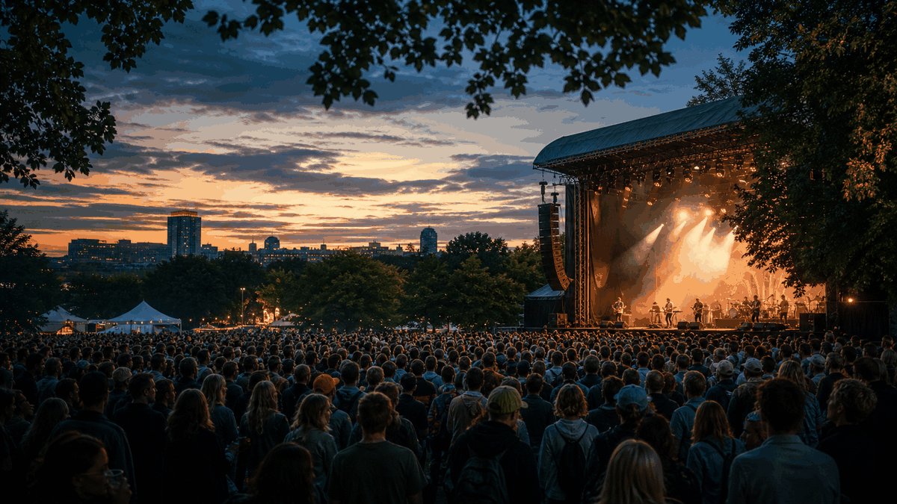

Music event guide
Øya Festival
A compact OneSliders guide to Øya Festival: what it is, how the current edition works and which moments matter most.
 More MusicInterested in more Music?
More MusicInterested in more Music?Explore related events, places and calendar moments.
Øya Festival is tracked as an evergreen event so the general guide stays stable while the year slide changes over time.
The year slide holds dates, place and practical questions in one compact view.
For festival pages, the top-level view should be line-up, stages, crowd flow, tickets and what changes by day.
- The programme and stage split matter more than a host table.
- Archive notes should keep memorable sets, attendance and theme changes.
- The year slide should carry the current line-up or programme once announced.
| Year | Host / place | Country |
|---|---|---|
| 2026 | Oslo | |
| 2025 | Oslo | |
| 2024 | Oslo | |
| 2023 | Oslo | |
| 2022 | Oslo | |
| 2021 | Oslo |
Related context
Edition guide
Øya Festival 2026
Choose an edition; only this slide changes.
Dates and programme details should be checked close to the event.
Dates are carried from the current OneSliders event listing.
Host context:  Norway.
Norway.
Check the organiser and city transport pages before travel.
Ticket windows and resale rules vary by edition.
Use the programme slide for the main visitor moments.
This edition is still upcoming.